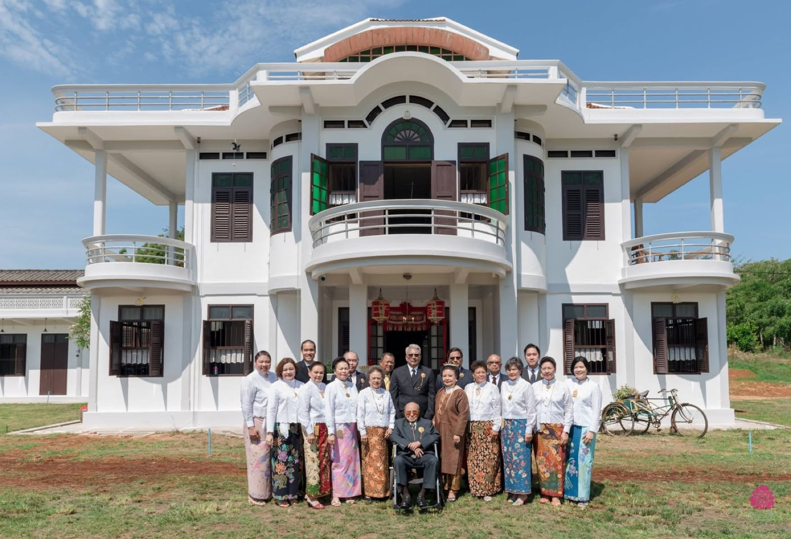
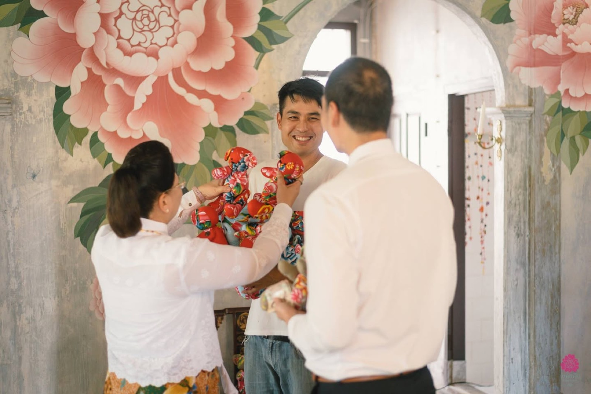
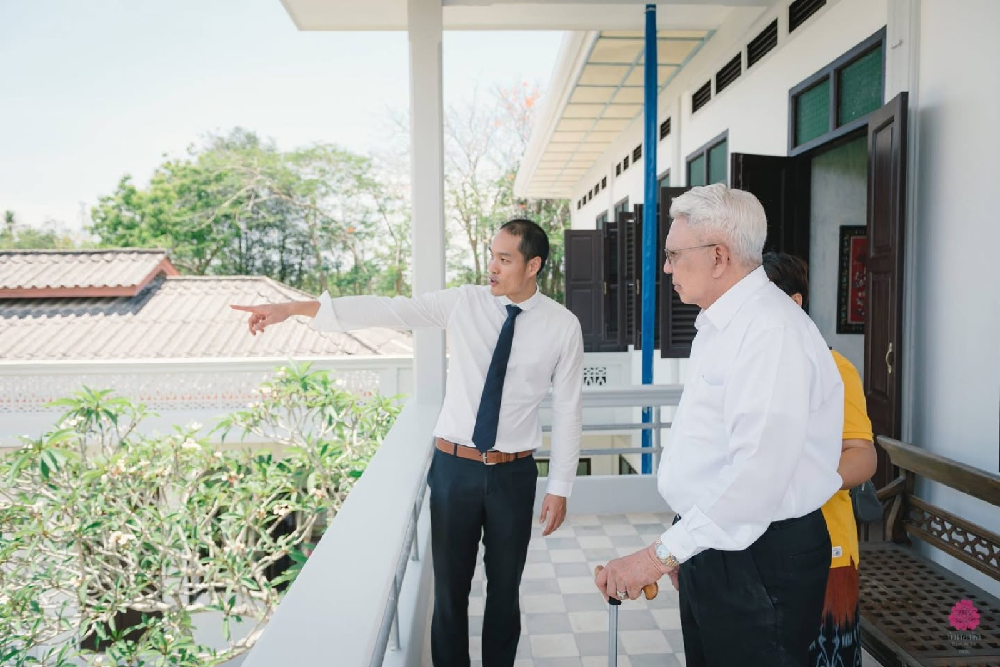
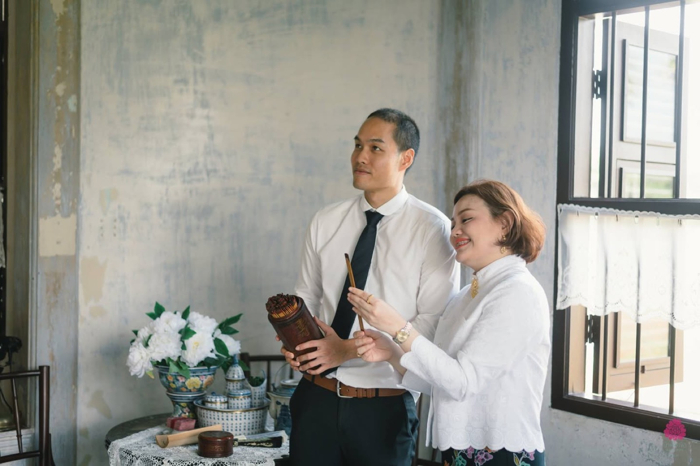
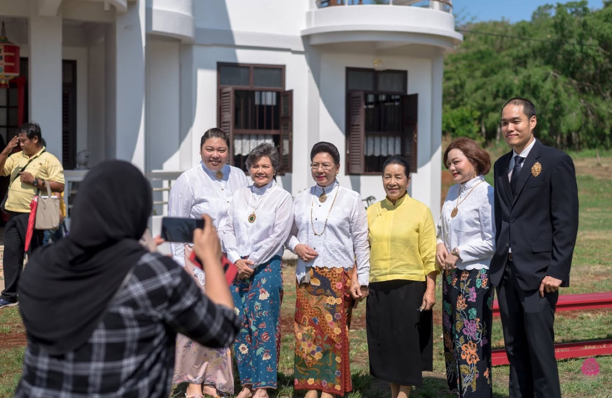

2019 · role · event
The Hongyok family council meets at Toh Daeng





Original text in Thai
" Hong(s)yok Family Council Meeting " ณ ร้านโต๊ะแดง @บ้านอาจ้อ เมื่อวาน 5/4/19 จบลงอย่างสวยงาม ได้รอยยิ้ม ได้ความประทับใจ ได้รำลึกความหลัง ได้ประวัติศาสตร์ ได้ถ่ายรูปหมู่พร้อมเพรียงที่สุด :)
ขอบคุณทีมงานทุกคนที่ทำให้งานสมบูรณ์แบบ เต็มไปด้วยรอยยิ้มมม
ทีมแคทเทอริ่ง และ เตรียมพร้อมสถานที่ประชุม - เปิ้ล Sutthathinee Sutthipoo และทีมงานวิวิธ - อาหารภูเก็ตน่าทาน หรอยถูกอกถูกใจ ทั้งผู้ใหญ่ที่มาประชุม และทีมงานมั่ก ๆ และ ขอบคุณดอกไม้สวยๆ ประดับที่ประชุมจาก ร้าน IAMFLOWER ทำให้บรรยากาศน่ารักขึ้นไปอีก :D
ทีมเครื่องแต่งกาย - ป้าแดง@บ้านชินประชา และ พี่หนูนา Kanjana Rukmit - ชุดพื้นเมืองภูเก็ตและการตกแต่ง พิถีพิถันและจัดเต็ม :D
ทีมถ่ายภาพ และตกแต่งสถานที่ - Set Bybank และ Phatthida Pattie Phasintharat - ภาพสวย ช่างภาพคนเดียวเอาอยู่ บวก การตกแต่งสถานที่สวยหรูแบบฉบับมืออาชีพ
ที่ปรึกษา และ Everything จี้จุ๋ม Orasa Tosawang ที่ทำให้บ้านอาจ้อสวยงาม และ function ได้อย่างมืออาชีพ
ทีมเงินทุน - Piyanoot Hongsyok และทีมงานทุกคน ที่คอยให้การสนับสนุนเรื่องการเงินและบัญชี
ทีมบ้านอาจ้อ - Banlu Hongyok และทีมงานทุกคน ผู้สร้างและเนรมิตทุกสิ่ง ที่อยู่เบื้องหลังความสำเร็จของบ้าน
ผู้ใหญ่ที่อยู่เบื้องหลังการปรับปรุงบ้าน เจกขุน ป๊าจอม อาสัจจะ Eed Sajja Pinyochon และอีกหลายท่านที่ไม่ได้กล่าวถึง
สุดท้ายครอบครัวและตัวอ๊อดเอง ที่ผลักดันให้บ้านอาจ้อสำเร็จไปอีกก้าว :D
ปล ภาพถ่ายทางการคนอื่นลงเยอะแล้ว โพสนี้ส่วนใหญ่เป็นภาพถ่ายเบื้องหลังให้กำลังใจตัวเอง เติมพลังทำงานต่อ :)
#บ้านอาจ้อ
#BaanArJor
#ADayIn1936
#HeritageStay
#BoutiqueHome